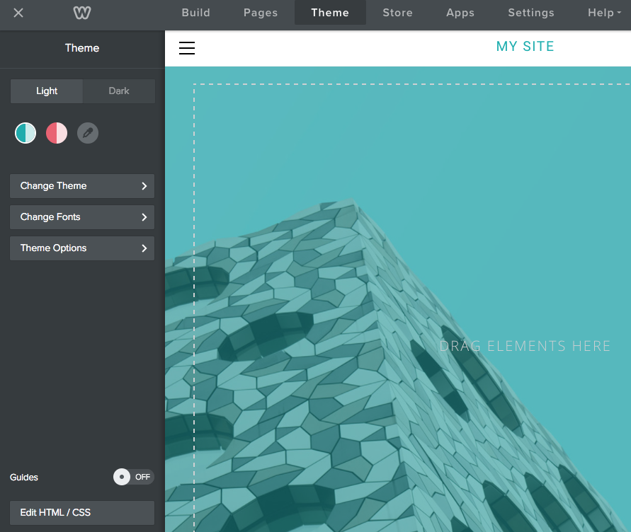

<!DOCTYPE html>
<head>
    <meta charset="utf-8">
<meta http-equiv="X-UA-Compatible" content="IE=edge">
<meta name="viewport" content="width=device-width, initial-scale=1">
<meta name="description" content="You can create a color palette for your theme that allows the user to select a primary and an accent color for the site.">
<meta name="keywords" content="configurationthemes,  color palette, eyedropper, accent color, primary color, variables, LESS variables, LESS, manifest,">
<title>Create a Color Palette | Weebly Cloud for Designers Documentation</title>
<link rel="stylesheet" href="css/syntax.css">


<link rel="stylesheet" type="text/css" href="https://maxcdn.bootstrapcdn.com/font-awesome/4.5.0/css/font-awesome.min.css">
<link rel="stylesheet" type="text/css" href="css/bootstrap.min.css">
<link rel="stylesheet" href="https://maxcdn.bootstrapcdn.com/bootstrap/3.3.2/css/bootstrap.min.css">
<link rel="stylesheet" href="css/modern-business.css">
<link rel="stylesheet" href="css/lavish-bootstrap.css">
<link rel="stylesheet" href="css/customstyles.css">
<link rel="stylesheet" href="css/theme-blue.css">


<script src="https://maxcdn.bootstrapcdn.com/bootstrap/3.3.2/js/bootstrap.min.js"></script>
<script src="https://ajax.googleapis.com/ajax/libs/jquery/1.11.2/jquery.min.js"></script>


<script src="https://cdnjs.cloudflare.com/ajax/libs/jquery/2.1.4/jquery.min.js"></script>
<script src="https://cdnjs.cloudflare.com/ajax/libs/jquery-cookie/1.4.1/jquery.cookie.min.js"></script>
<script src="js/jquery.navgoco.min.js"></script>


<script src="https://maxcdn.bootstrapcdn.com/bootstrap/3.3.4/js/bootstrap.min.js"></script>
<script src="https://cdnjs.cloudflare.com/ajax/libs/anchor-js/2.0.0/anchor.min.js"></script>
<script src="js/toc.js"></script>
<script src="js/customscripts.js"></script>

<link rel="shortcut icon" href="images/favicon.ico">

<!-- HTML5 Shim and Respond.js IE8 support of HTML5 elements and media queries -->
<!-- WARNING: Respond.js doesn't work if you view the page via file:// -->
<!--[if lt IE 9]>
<script src="https://oss.maxcdn.com/libs/html5shiv/3.7.0/html5shiv.js"></script>
<script src="https://oss.maxcdn.com/libs/respond.js/1.4.2/respond.min.js"></script>
<![endif]-->

<!-- <link rel="alternate" type="application/rss+xml" title="" href="http://localhost:4008feed.xml"> -->

<script type="text/javascript">
    $(document).ready(function() {

        /*Bootstrap popovers are initialized with the following script. In the options, I'm setting the placement to be on the right, the trigger to be hover rather than click, and to allow HTML from the JSON data source. */

        $('[data-toggle="popover"]').popover({
            placement: 'top',
            trigger: 'hover',
            html: true
        });
    })
</script>
    <script>
        $(document).ready(function() {
            // Initialize navgoco with default options
            $("#mysidebar").navgoco({
                caretHtml: '',
                accordion: true,
                openClass: 'active', // open
                save: false, // leave false or nav highlighting doesn't work right
                cookie: {
                    name: 'navgoco',
                    expires: false,
                    path: '/'
                },
                slide: {
                    duration: 400,
                    easing: 'swing'
                }
            });

            $("#collapseAll").click(function(e) {
                e.preventDefault();
                $("#mysidebar").navgoco('toggle', false);
            });

            $("#expandAll").click(function(e) {
                e.preventDefault();
                $("#mysidebar").navgoco('toggle', true);
            });

        });

    </script>
    <script>
        $(function () {
            $('[data-toggle="tooltip"]').tooltip()
        })
    </script>
    

</head>
<body>
<!-- Navigation -->
<nav class="navbar navbar-inverse navbar-fixed-top">
    <div class="container topnavlinks">
        <div class="navbar-header">
            <button type="button" class="navbar-toggle" data-toggle="collapse" data-target="#bs-example-navbar-collapse-1">
                <span class="sr-only">Toggle navigation</span>
                <span class="icon-bar"></span>
                <span class="icon-bar"></span>
                <span class="icon-bar"></span>
            </button>

            <a class="fa fa-home fa-lg navbar-brand" href="home.html">&nbsp;<span class="projectTitle">
                Weebly Cloud for Designers</span></a>
        </div>
        <div class="collapse navbar-collapse" id="bs-example-navbar-collapse-1">
            <ul class="nav navbar-nav navbar-right">
                <!-- entries without drop-downs appear here -->
                
                
                
                <li><a href="home.html">Get Started</a></li>
                
                
                
                <li><a href="ds_apps_gs.html">Custom Apps</a></li>
                
                
                
                <li><a href="ds_themes_start.html">Custom Themes</a></li>
                
                
                
                <li><a href="ds_apis_about.html">Cloud APIs</a></li>
                
                
                
                <li><a href="ds_tags_about.html">Tags</a></li>
                
                
                
                <!-- entries with drop-downs appear here -->
                <!-- conditional logic to control which topnav appears for the audience defined in the configuration file.-->
                
                
			<li>


  <a class="email" title="Submit feedback" href="#" onclick="javascript:window.location='mailto:rwhitmore@weebly.com?subject=Weebly Cloud for Designers Docs feedback&body=I have some feedback about the Create a Color Palette page: ' + window.location.href;"><i class="fa fa-envelope-o"></i> Feedback</a>

</li>

		
                <!--comment out this block if you want to hide search-->
                <li>
                    <!--start search-->
                    <div id="search-demo-container">
                        <input type="text" id="search-input" placeholder="Search...">
                        <ul id="results-container"></ul>
                    </div>
                    <script src="js/jekyll-search.js" type="text/javascript"></script>
                    <script type="text/javascript">
                            SimpleJekyllSearch.init({
                                searchInput: document.getElementById('search-input'),
                                resultsContainer: document.getElementById('results-container'),
                                dataSource: 'search.json',
                                searchResultTemplate: '<li><a href="{url}" title="Create a Color Palette">{title}</a></li>',
                    noResultsText: 'No results',
                            limit: 10,
                            fuzzy: true,
                    })
                    </script>
                    <!--end search-->
                </li>
            </ul>
        </div>
        </div>
        <!-- /.container -->
</nav>

<!-- Page Content -->
<div class="container">
    <div class="col-lg-12">&nbsp;</div>
    <!-- Content Row -->
    <div class="row">
        <!-- Sidebar Column -->
        <div class="col-md-3">

          


<ul id="mysidebar" class="nav">
    <li class="sidebarTitle">Develop Weebly Themes </li>
    
    
    
        
    
    <li>
        <a href="#">Get Started with Customizing Themes</a>
        <ul>
            
            
            
            <li><a href="ds_themes_start.html">Customizing Themes</a></li>
            
            
            
            
            
            
            <li><a href="ds_themes_sample.html">Download Sample Themes</a></li>
            
            
            
            
            
            
            <li><a href="ds_themes_anatomy.html">Anatomy of a Theme</a></li>
            
            
            
            
            
            
            <li><a href="ds_themes_directory.html">Theme Directory Structure</a></li>
            
            
            
            
            
            
            <li><a href="ds_themes_issues.html">Known Issues</a></li>
            
            
            
            
        </ul>
        
        
    
    <li>
        <a href="#">Tutorial&#58; Customize a Theme</a>
        <ul>
            
            
            
            <li><a href="ds_themes_tutorial.html">Customize a Weebly Theme</a></li>
            
            
            
            
            
            
            <li><a href="ds_themes_1.html">1. Download the Base Theme</a></li>
            
            
            
            
            
            
            <li><a href="ds_themes_2.html">2. Apply YOur Theme to a Test Site</a></li>
            
            
            
            
            
            
            <li><a href="ds_themes_3.html">3. Add a Color Palette</a></li>
            
            
            
            
            
            
            <li><a href="ds_themes_4.html">4. Create Variations of the Theme</a></li>
            
            
            
            
            
            
            <li><a href="ds_themes_5.html">5. Edit the Header Template</a></li>
            
            
            
            
            
            
            <li><a href="ds_themes_6.html">6. Edit the main.less File</a></li>
            
            
            
            
            
            
            <li><a href="ds_themes_7.html">7. Edit the Blog Post Partial</a></li>
            
            
            
            
            
            
            <li><a href="ds_themes_8.html">8. Add a Theme Option</a></li>
            
            
            
            
            
            
            <li><a href="ds_themes_9.html">9. Add a Screenshot</a></li>
            
            
            
            
            
            
            <li><a href="ds_themes_10.html">10. Deliver Your Theme</a></li>
            
            
            
            
            
            
            <li><a href="ds_themes_finish.html">Finish</a></li>
            
            
            
            
        </ul>
        
        
    
    <li>
        <a href="#">Theme Design</a>
        <ul>
            
            
            
            <li><a href="ds_themes_guidelines.html">Theme Design Guidelines</a></li>
            
            
            
            
            
            
            <li><a href="ds_themes_page.html">Page Guidelines for Themes</a></li>
            
            
            
            
            
            
            <li><a href="ds_themes_element_guidelines.html">Element Guidelines for Themes</a></li>
            
            
            
            
        </ul>
        
        
    
    <li>
        <a href="#">Create a Theme</a>
        <ul>
            
            
            
            <li><a href="ds_themes_create.html">How to Create a Theme</a></li>
            
            
            
            
            
            
            <li><a href="ds_themes_import_export.html">Import and Export Themes</a></li>
            
            
            
            
            
            
            <li><a href="ds_themes_implement_css.html">Implement the CSS</a></li>
            
            
            
            
            
            
            <li><a href="ds_themes_create_templates.html">Create HTML Layout Templates</a></li>
            
            
            
            
            
            
            <li><a href="ds_themes_partials.html">Use Partials</a></li>
            
            
            
            
            
            
            <li><a href="ds_themes_manifest.html">Create the Theme Manifest</a></li>
            
            
            
            
            
            
            <li><a href="ds_themes_options.html">Add Options to Your Themes</a></li>
            
            
            
            
            
            
            <li class="active"><a href="ds_themes_palette.html">Create a Color Palette</a></li>
            
            
            
            
            
            
            <li><a href="ds_themes_variations.html">Add Color Variations</a></li>
            
            
            
            
            
            
            <li><a href="ds_themes_screenshot.html">Create a Theme Screenshot</a></li>
            
            
            
            
            
            
            <li><a href="ds_themes_deliver.html">Deliver Your Theme</a></li>
            
            
            
            
            
            
            <li><a href="ds_themes_update.html">Update Your Theme</a></li>
            
            
            
            
        </ul>
        
        
    
    <li>
        <a href="#">Theme Resources</a>
        <ul>
            
            
            
            <li><a href="ds_themes_design_resources.html">Design Resources</a></li>
            
            
            
            
            
            
            <li><a href="ds_themes_LESS.html">About LESS</a></li>
            
            
            
            
            
            
            <li><a href="ds_themes_mustache.html">About Mustache</a></li>
            
            
            
            
        </ul>
        
        
    
    <li>
        <a href="#">Partial Maps</a>
        <ul>
            
            
            
            <li><a href="ds_themes_blogPartials.html">Blog Partials</a></li>
            
            
            
            
            
            
            <li><a href="ds_themes_comPartials.html">Commerce Partials</a></li>
            
            
            
            
            
            
            <li><a href="ds_themes_membershipPartials.html">Membership Partials</a></li>
            
            
            
            
            
            
            <li><a href="ds_themes_navPartials.html">Navigation Partials</a></li>
            
            
            
            
            
            
            <li><a href="ds_themes_searchPartials.html">Search Partials</a></li>
            
            
            
            
        </ul>
        
        
    
    <li>
        <a href="#">Theme FAQs</a>
        <ul>
            
            
            
            <li><a href="ds_themes_faqs.html">Theme FAQs</a></li>
            
            
            
            
        </ul>
        
        
        
        <!-- if you aren't using the accordion, uncomment this block:
           <p class="external">
               <a href="#" id="collapseAll">Collapse All</a> | <a href="#" id="expandAll">Expand All</a>
           </p>
           -->
    </li>
</ul>
</div>

<!-- this highlights the active parent class in the navgoco sidebar. this is critical so that the parent expands when you're viewing a page. This must appear below the sidebar code above. Otherwise, if placed inside customscripts.js, the script runs before the sidebar code runs and the class never gets inserted.-->
<script>$("li.active").parents('li').toggleClass("active");</script>

    <!-- Content Column -->
    <div class="col-md-9">
        <div>
    <div class="pageType">  task </div>
    <div class="post-header">
        <h1 class="post-title-main">Create a Color Palette</h1>
    </div>
</div>


<div class="post-content">

   
    <div class="summary">You can create a color palette for your theme that allows the user to select a primary and an accent color for the site.</div>
   


    
    
<!-- this handles the automatic toc. use ## for subheads to auto-generate the on-page minitoc. if you use html tags, you must supply an ID for the heading element in order for it to appear in the minitoc. -->
<script>
$( document ).ready(function() {
  // Handler for .ready() called.

$('#toc').toc({ minimumHeaders: 0, listType: 'ul', showSpeed: 0, headers: 'h2' });

/* this offset helps account for the space taken up by the floating toolbar. */
$('#toc').on('click', 'a', function() {
  var target = $(this.getAttribute('href'))
    , scroll_target = target.offset().top

  $(window).scrollTop(scroll_target - 50);
  return false
})
  
});
</script>

<div id="toc"></div>

    


    

  <h2 id="about-color-palettes">About Color Palettes</h2>

<p>Color palettes allow you to provide pre-defined primary and accent color schemes for your theme, but also allow the user to create their own. You determine where the primary and accent colors are used (or variations of them), and provide default values for those colors. Users can’t change where they are used, but can change the colors that are used.</p>

<p>For example, this theme offers two default palettes - a blue one and a pink one. On the page being shown, the primary color is used for the title and as a color overlay on the image.</p>
<figure><figcaption>The blue palette colors the title and the color overlay</figcaption></figure>

<p>Here’s the same theme using the pink palette. Notice where the primary color is used hasn’t changed, but the color itself has.</p>
<figure><figcaption>Now the primary color of dark rose is used in place of the blue</figcaption></figure>

<p>Users can select their own primary and accent colors using the eyderopper.</p>
<figure><figcaption>Users select colors by clicking the eyedropper and then using the dropdowns to choose colors</figcaption></figure>

<p>You create palettes by defining variables in the theme’s manifest that are used in the LESS stylesheets.</p>
<div class="alert alert-info" role="alert"><i class="fa fa-info-circle"></i> <b>Note:</b> Color palettes are only supported using LESS. You cannot use color palettes with CSS.</div>

<h2 id="create-a-color-palette">Create a Color Palette</h2>

<p>You create a color palette by turning on the feature and then optionally defining colors in one or more palettes.</p>

<p>To allow a palette for your theme, add the color-support element to the theme’s manifest and determine if you’ll support a primary and an accent color or just a primary color.</p>

<figure class="highlight"><pre><code class="language-json" data-lang="json"><span class="err"></span><span class="w">
</span><span class="s2">"color-support"</span><span class="err">:</span><span class="w"> </span><span class="p">{</span><span class="w">
    </span><span class="nt">"primary"</span><span class="p">:</span><span class="w"> </span><span class="kc">true</span><span class="p">,</span><span class="w">
    </span><span class="nt">"accent"</span><span class="p">:</span><span class="w"> </span><span class="kc">true</span><span class="w">
</span><span class="p">}</span></code></pre></figure>

<p>Adding this support creates the dropper icon that allows the user to create their own palette. Supporting just a primary color means the user can only choose one color. Supporting both allows the user to choose a color for both. This image shows support for just a primary color:</p>
<figure><figcaption>You can define just a primary color in your palette</figcaption></figure>

<p>​This theme allows both a primary and accent color:</p>
<figure><figcaption>Or a primary and accent color can be configured</figcaption></figure>

<p>Optionally create a default palette by defining a primary and/or an accent color within an array of palette colors (a palette must be in an array even if there is only one).</p>

<figure class="highlight"><pre><code class="language-json" data-lang="json"><span class="err"></span><span class="w">
</span><span class="s2">"color-presets"</span><span class="err">:</span><span class="w"> </span><span class="p">[</span><span class="w">
    </span><span class="p">{</span><span class="w">
        </span><span class="nt">"primary"</span><span class="p">:</span><span class="w"> </span><span class="s2">"#171b6d"</span><span class="p">,</span><span class="w">
        </span><span class="nt">"accent"</span><span class="p">:</span><span class="w"> </span><span class="s2">"#ad8d0c"</span><span class="w">
    </span><span class="p">}</span><span class="w">
</span><span class="p">]</span><span class="err">,</span></code></pre></figure>

<p>You can create as many palettes in the array as you’d like.</p>

<p></p>
<figure class="highlight"><pre><code class="language-json" data-lang="json"><span class="s2">"color-presets"</span><span class="err">:</span><span class="w"> </span><span class="p">[</span><span class="w">
    </span><span class="p">{</span><span class="w">
        </span><span class="nt">"primary"</span><span class="p">:</span><span class="w"> </span><span class="s2">"#171b6d"</span><span class="p">,</span><span class="w">
        </span><span class="nt">"accent"</span><span class="p">:</span><span class="w"> </span><span class="s2">"#ad8d0c"</span><span class="w">
    </span><span class="p">},</span><span class="w">
    </span><span class="p">{</span><span class="w">
        </span><span class="nt">"primary"</span><span class="p">:</span><span class="w"> </span><span class="s2">"#bc3089"</span><span class="p">,</span><span class="w">
        </span><span class="nt">"accent"</span><span class="p">:</span><span class="w"> </span><span class="s2">"#a0d9e2"</span><span class="w">
    </span><span class="p">}</span><span class="w">
</span><span class="p">]</span><span class="err">,</span></code></pre></figure>

<p>Once the palette(s) are defined, they display in the sidebar where the user can choose one or create their own. ​If you don’t create a palette, (but do add the color-support element), then only the eyedropper icon displays, allowing the user to create their own palette.</p>

<h2 id="using-color-palettes-in-less">Using Color Palettes in LESS</h2>

<p>Once you define a palette(s), then you determine where those colors are used in the theme. You use LESS variables in your stylesheet to represent the colors. That way, when the user selects one of the palettes, or creates their own, the right color is used:</p>

<ul>
  <li><strong>Primary color</strong>: <code class="highlighter-rouge">@site-primary-color</code></li>
  <li><strong>Accent color</strong>: <code class="highlighter-rouge">@site-accent-color</code></li>
</ul>

<p>​For example, if you want titles to use the primary color and buttons to use the accent color, you might add the following to your <code class="highlighter-rouge">main.less</code> file.</p>

<p></p>
<figure class="highlight"><pre><code class="language-css" data-lang="css"><span class="nt">h1</span> <span class="p">{</span>
    <span class="nl">color</span><span class="p">:</span> <span class="err">@</span><span class="n">site-primary-color</span><span class="p">;</span>
<span class="err">.</span> <span class="err">.</span> <span class="err">.</span>
<span class="p">}</span>

<span class="nc">.wsite-button</span> <span class="p">{</span>
    <span class="nl">background-color</span><span class="p">:</span> <span class="err">@</span><span class="n">site-accent-color</span><span class="p">;</span>
<span class="err">.</span> <span class="err">.</span> <span class="err">.</span>
<span class="p">}</span></code></pre></figure>

<p>You can use LESS color operation functions to provide variations on the primary and accent colors, while still keeping within the palette. For example, you might set <code class="highlighter-rouge">h2</code> to be a slightly lighter shade of the primary color using the <code class="highlighter-rouge">tint</code> function:</p>

<p></p>
<figure class="highlight"><pre><code class="language-css" data-lang="css"><span class="nt">h2</span> <span class="p">{</span>
    <span class="nl">color</span><span class="p">:</span> <span class="n">tint</span><span class="p">(</span><span class="err">@</span><span class="n">site-primary-color</span><span class="p">,</span> <span class="m">50%</span><span class="p">);</span>
<span class="err">.</span> <span class="err">.</span> <span class="err">.</span>
<span class="p">}</span></code></pre></figure>

<p>You can find more about using LESS color operations functions <a href="http://lesscss.org/functions/#color-operations">here</a>.</p>

<p>​​To provide more color flexibility for your palettes, you can create a dark and light version. Follow the procedures for creating <a href="ds_themes_variations.html">color variations</a>, using the palette variables in versions’ LESS file. Name the light version <code class="highlighter-rouge">variables_light.less</code> and the dark <code class="highlighter-rouge">variables_dark.less</code>.</p>


    <div class="tags">
        
        <b>Tags: </b>
        
        
        
        <a href="tag_configuration.html" class="btn btn-default navbar-btn cursorNorm" role="button">configuration</a>
        
        
        
        <a href="tag_themes.html" class="btn btn-default navbar-btn cursorNorm" role="button">themes</a>
        
        
        
    </div>

    

</div>

<hr class="shaded"/>

<footer>
            <div class="row">
                <div class="col-lg-12 footer">
               &copy;2017 Weebly. All rights reserved. <br />
 Site last generated: Sep 29, 2017 <br />
<p></p>
                </div>
            </div>
</footer>


    </div>
    <!-- /.row -->
</div>
<!-- /.container -->
    </div>

</body>

</html>